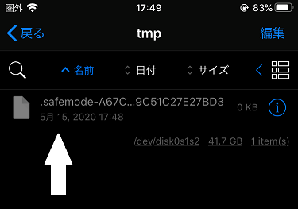

*substitute環境用*
*Cydia Substrate環境では必要ありません*
クラッシュした時にセーフモードに入らなくなります（SpringBoard以外）
なにこれ
SpringBoardがクラッシュした時に自動的にセーフモードに入りますが
Substituteの場合、アプリがクラッシュした場合も
目には見えませんがセーフモードに入ります
[各アプリのホームディレクトリ]/tmp/.safemode-XXXXXXX....
というファイルが存在している場合、tweakが
インジェクションされずに起動します
脱獄対策回避を入れたけど起動しない、再インストールで起動する
という場合、ほとんどこれが原因です。
（あるいは起動したが2回目以降起動しなくなった等）

このtweakはそれを阻止します
これ自体がtweakなので、これをインストールする前に
既に.safemode-XXXXXX...ファイルが存在している場合、
削除してください
あり得ること
普段バックグラウンドで実行されているデーモンなどにも影響します（たぶん）
なので「実はクラッシュしてたけどセーフモードで起動してた」
のようなプロセスがあった場合、クラッシュのループに陥る可能性があります
結果的にクラッシュ→起動のループでバッテリードレインを引き起こす
可能性もありますのでご注意ください